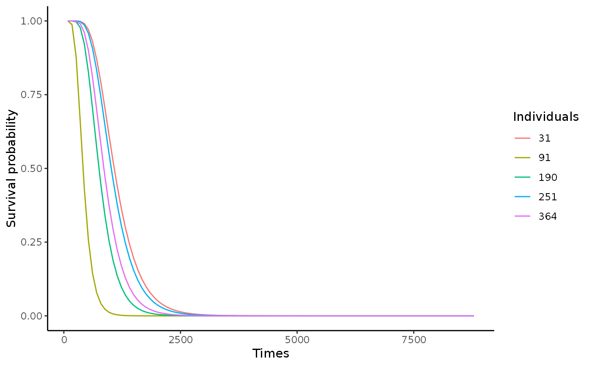

Data simulation from different survival models
modelSim( model = "cox", matDistr, matParam, n, p, pnonull, betaDistr, hazDistr, hazParams, seed, Phi = NULL, d = 0, pourc = 0.9 )
| model | Survival model: "cox", "AFT", "AFTshift" or "AH" |
|---|---|
| matDistr | Distribution of matrix |
| matParam | Parameters of matrix |
| n | size of sample |
| p | number of parameters |
| pnonull | number of partinent covariates |
| betaDistr | Distribution of beta or vector of beta |
| hazDistr | distribution of baseline hazard |
| hazParams | Parameters of baseline hazard |
| seed | seed |
| Phi | nonlinearity (not coded) |
| d | censorship |
| pourc | pourcents |
modelSim returns a list containing:
model model (Cox, AFT, AFTshift, AH)
Z Matrix of covariates
Y random covariates
TC Vector of survival times
delta Vector of censorship indicator
betanorm Vector of normalized regression parameter
crate Censorship rate
crate_delta Censorship rate
vecY Vector of number of individuals at risk at time \(t_i\)
hazParams Vector of parameter distribution of the baseline hazard function
hazDistr Distribution of the baseline hazard function
St Matrix of survival functions
ht Matrix of hazard risk functions
grilleTi Time grid
This function simulates survival data from different models: Cox model, AFT model and AH model. 1. The Cox model is defined as: \( \lambda(t|X) = \alpha_0(t) \exp(\beta^T X_{i.}), \) with \(\alpha_0(t)\) is the baseline risk and \(\beta\) is the vector of coefficients. Two distributions are considered for the baseline risk:
Weibull: \(\alpha_0(t) = \lambda a t^{(a-1)}\);
Log-normal: \(\alpha_0(t) = (1/(\sigma\sqrt(2\pi t) \exp[-(\log t - \mu)^2 /2 \sigma^2]))/(1 - \Phi[(\log t - \mu)/\sigma\)]);
Exponential: \(\alpha_0(t) = \lambda\);
Gompertz: \(\alpha_0(t) = \lambda \exp(\alpha t)\).
To Simulate the covariates, two distributions are also proposed:
Uniform
Normal
and the choice of parameters The Phi parameter enables to simulate survival data in a linear framework with no interaction, but its future implementation will take into account a non-linear framework with interactions. If the parameter Phi is NULL (to complete...).
2. The AFT model is defined from a linear regression of the interest covariate: \( Y_i = X_{i.} \beta + W_i, \) with \(X_{i.}\) the covariates, \(\beta\) the vector of regression coefficients et \(\epsilon_i\) the error term AFT model can also be defined from the baseline survival function \(S_0(t)\), corresponding distribution tail \(\exp(\epsilon_i)\). Survival function of AFT model is written as: \( S(t|{X_{i.}}) = S_0(t\exp{(\beta^T X_{i.})}), \) and the expression of hazard risk is the form of: \( \lambda(t|X_{i.}) = \exp(\beta^T X_{i.}) \alpha_0(t\exp(\beta^T X_{i.})). \label{eq:riskAFT} \) with \(\alpha_0(t)\) is the baseline risk and \(\beta\) is the vector of coefficients. The advantage of AFT model is that the variables have a multiplicative effect on \(t\) rather than on the risk function, as is the case in Cox model. Two distributions are considered for the baseline risk:
Weibull: \(\alpha_0(t) = \lambda a t^{(a-1)}\);
Log-normal: \(\alpha_0(t) = (1/(\sigma\sqrt(2\pi t) \exp[-(\log t - \mu)^2 /2 \sigma^2]))/(1 - \Phi[(\log t - \mu)/\sigma\)])
.
To Simulate the covariates, two distributions are also proposed:
Uniform
Normal
and the choice of parameters The Phi parameter enables to simulate survival data in a linear framework with no interaction, but its future implementation will take into account a non-linear framework with interactions. If the parameter Phi is NULL (to complete...). 3. The hazard risk of the AH model is defined for an individual \(i\) as: \( \lambda_{AH}(t|X_{i.}) = \alpha_0(t\exp(\beta^T X_{i.})), \) with \(\alpha_0\) the baseline risk and \(\beta\) the vector of regression parameters. In a model with only one binary variable considered that corresponds to the treatment, the hazard risk is written as follows: \( \lambda_1(t) = \alpha_0(\beta t). \) with \(\alpha_0\) the baseline risk and \(\beta\) the vector of regression parameters. In a model with only one binary variable considered that corresponds to the treatment, the hazard risk is written as follows: \( \lambda_1(t) = \alpha_0(\beta t). \) The regression vector \(\beta\) characterizes the influence of variables on the survival time of individuals, and \(\exp(\beta^TX_{i.})\) is a factor altering the time scale on hazard risk. The positive or negative value of \(\beta^T X_{i.}\) will respectively imply an acceleration or deceleration of the risk.The AH model is defined from a linear regression of the interest covariate: Two distributions are considered for the baseline risk:
Weibull: \(\alpha_0(t) = \lambda a t^{(a-1)}\);
Log-normal: \(\alpha_0(t) = (1/(\sigma\sqrt(2\pi t) \exp[-(\log t - \mu)^2 /2 \sigma^2]))/(1 - \Phi[(\log t - \mu)/\sigma])\).
To Simulate the covariates, two distributions are also proposed:
Uniform
Normal
and the choice of parameters The Phi parameter enables to simulate survival data in a linear framework with no interaction, but its future implementation will take into account a non-linear framework with interactions. If the parameter Phi is NULL (to complete...).
sim$model <- model
Mathilde Sautreuil
library(survMS) ### Survival data simulated from Cox model res_paramW = get_param_weib(med = 1062, mu = 1134) listCoxSim_n500_p1000 <- modelSim(model = "cox", matDistr = "unif", matParam = c(-1,1), n = 500, p = 1000, pnonull = 20, betaDistr = 1, hazDistr = "weibull", hazParams = c(res_paramW$a, res_paramW$lambda), seed = 1, d = 0)#> Warning: Options "non-linearity with interactions" not available#> [1] 1.969765e+00 7.586963e-07#> Simulated matrix of size 500 1000 #> Distribution of baseline hazard function weibull #> Distribution parameter of baseline hazard function 1.969765 7.586963e-07 #> Censorship rate 0df_p1000_n500 = data.frame(time = listCoxSim_n500_p1000$TC, event = listCoxSim_n500_p1000$delta, listCoxSim_n500_p1000$Z) df_p1000_n500[1:6,1:10]#> time event X1 X2 X3 X4 X5 #> 1 984.0383 TRUE -0.4689827 0.10835412 0.06161759 -0.85424529 0.7436100 #> 2 1247.6510 TRUE -0.2557522 0.37655048 0.36972181 0.74861751 0.9343941 #> 3 1003.7009 TRUE 0.1457067 0.31611511 -0.23343321 -0.60225439 0.7338325 #> 4 632.6652 TRUE 0.8164156 0.32668545 0.90997600 0.06917952 -0.1245694 #> 5 1385.3040 TRUE -0.5966361 -0.05553159 -0.76328684 -0.78887562 -0.6161244 #> 6 505.3584 TRUE 0.7967794 0.93905633 -0.92179989 -0.23200997 -0.8354112 #> X6 X7 X8 #> 1 0.05203812 0.60469908 0.19983827 #> 2 -0.85332915 -0.04100963 0.58890922 #> 3 0.69948350 -0.64519687 0.00917386 #> 4 -0.15388398 -0.20573331 0.08030391 #> 5 0.97619215 0.62845399 -0.95182076 #> 6 -0.04225174 0.88271415 0.55445834#> [1] 500 1002listCoxSim_n500_p25000 <- modelSim(model = "cox", matDistr = "unif", matParam = c(-1,1), n = 500, p = 25000, pnonull = 20, betaDistr = 1, hazDistr = "weibull", hazParams = c(res_paramW$a, res_paramW$lambda), seed = 1, d = 0)#> Warning: Options "non-linearity with interactions" not available#> [1] 1.969765e+00 7.586963e-07#> Simulated matrix of size 500 25000 #> Distribution of baseline hazard function weibull #> Distribution parameter of baseline hazard function 1.969765 7.586963e-07 #> Censorship rate 0df_p25m_n500 = data.frame(time = listCoxSim_n500_p25000$TC, event = listCoxSim_n500_p25000$delta, listCoxSim_n500_p25000$Z) df_p25m_n500[1:6,1:10]#> time event X1 X2 X3 X4 X5 #> 1 207.2944 TRUE -0.4689827 0.10835412 0.06161759 -0.85424529 0.7436100 #> 2 1268.9080 TRUE -0.2557522 0.37655048 0.36972181 0.74861751 0.9343941 #> 3 2001.0070 TRUE 0.1457067 0.31611511 -0.23343321 -0.60225439 0.7338325 #> 4 199.4698 TRUE 0.8164156 0.32668545 0.90997600 0.06917952 -0.1245694 #> 5 1973.7173 TRUE -0.5966361 -0.05553159 -0.76328684 -0.78887562 -0.6161244 #> 6 238.8874 TRUE 0.7967794 0.93905633 -0.92179989 -0.23200997 -0.8354112 #> X6 X7 X8 #> 1 0.05203812 0.60469908 0.19983827 #> 2 -0.85332915 -0.04100963 0.58890922 #> 3 0.69948350 -0.64519687 0.00917386 #> 4 -0.15388398 -0.20573331 0.08030391 #> 5 0.97619215 0.62845399 -0.95182076 #> 6 -0.04225174 0.88271415 0.55445834### Survival data simulated from AFT model res_paramLN = get_param_ln(var = 200000, mu = 1134) listAFTSim_n500_p1000 <- modelSim(model = "AFT", matDistr = "unif", matParam = c(-1,1), n = 500, p = 100, pnonull = 100, betaDistr = 1, hazDistr = "log-normal", hazParams = c(res_paramLN$a, res_paramLN$lambda), Phi = 0, seed = 1, d = 0)#> Warning: Options "non-linearity with interactions" not availabledf_p1000_n500 = data.frame(time = listAFTSim_n500_p1000$TC, event = listAFTSim_n500_p1000$delta, listAFTSim_n500_p1000$Z) df_p1000_n500[1:6,1:10]#> time event X1 X2 X3 X4 X5 #> 1 895.8864 TRUE -0.4689827 0.10835412 0.06161759 -0.85424529 0.7436100 #> 2 708.7914 TRUE -0.2557522 0.37655048 0.36972181 0.74861751 0.9343941 #> 3 2263.6986 TRUE 0.1457067 0.31611511 -0.23343321 -0.60225439 0.7338325 #> 4 992.8914 TRUE 0.8164156 0.32668545 0.90997600 0.06917952 -0.1245694 #> 5 1207.9681 TRUE -0.5966361 -0.05553159 -0.76328684 -0.78887562 -0.6161244 #> 6 2884.4943 TRUE 0.7967794 0.93905633 -0.92179989 -0.23200997 -0.8354112 #> X6 X7 X8 #> 1 0.05203812 0.60469908 0.19983827 #> 2 -0.85332915 -0.04100963 0.58890922 #> 3 0.69948350 -0.64519687 0.00917386 #> 4 -0.15388398 -0.20573331 0.08030391 #> 5 0.97619215 0.62845399 -0.95182076 #> 6 -0.04225174 0.88271415 0.55445834#> [1] 500 102# write.csv(df_p1000_n500, file = paste0(path, "DF_RegScreen_n500_p1000.csv"), row.names = F) # listAFTSim_n500_p25000 <- modelSim(model = AFT, matDistr = "unif", matParam = c(-1,1), # n = 500, p = 25000, pnonull = 20, betaDistr = 1, # hazDistr = "weibull", # hazParams = c(res_paramLN$a, res_paramLN$lambda), # seed = 1, d = 0) # hist(listAFTSim_n500_p25000) # df_p25m_n500 = data.frame(time = listAFTSim_n500_p25000$TC, # event = listAFTSim_n500_p25000$delta, # listAFTSim_n500_p25000$Z) # df_p25m_n500[1:6,1:10]